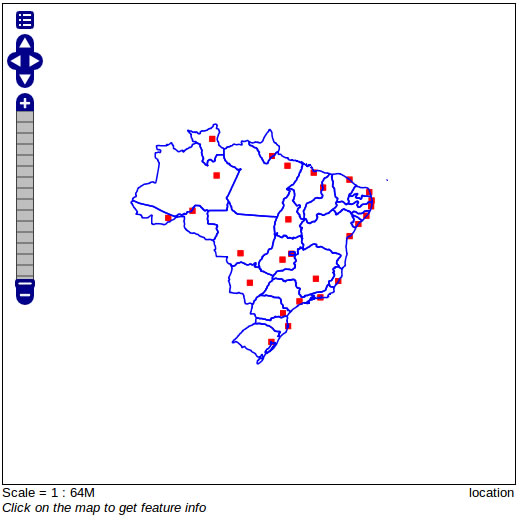

Contents
Clicando no menu lateral em Layer Groups, entraremos na tela abaixo
Preencheremos o formulário e adicionaremos as camadas que vão compor o nosso grupo
Formulário de inclusão do grupo
Listagem do grupo cadastrado
No menu lateral Layer Preview, visualizaremos como ficou nosso grupo
Camadas disponíveis
